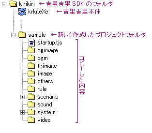

まず、吉里吉里 SDK のフォルダ (
krkr.eXe のあるところ ) の下に、プロジェクト名をつけたフォルダを作りましょう。プロジェクト名は何でもいいです。ただし、"
data" というフォルダ名は避けてください (
data というフォルダ名にするのは必要に応じて配布する時にそうします )。このフォルダを
プロジェクトフォルダと呼びます。
そうしたら、そのフォルダの下に、KAG のシステムをコピーします。
template というフォルダが、ダウンロードした KAG の LZH ファイルを展開するとあるはずです。その
中身(
template フォルダごとではなくて ) をこのプロジェクトフォルダにコピーします。
配置は以下のようになります。

ファイルをコピーした
そうしたら、
system フォルダの中に
Config.~new というファイルがありますので、それを
Config.tjs に改名してください。それから、テキストエディタで
Config.tjs を開いてください。
Config.tjs はそのほかにもいろいろと設定する箇所があって、後々いじる事になると思います。詳しい説明は
Config.tjs 内に書いてありますのでそちらを参照してください。
なお、コピーしたフォルダの中に「〜このファイルは削除してかまいません〜」というファイルがある場合がありますが、これはアーカイブ展開ソフトが、空のフォルダを展開しない場合があるために置いてあるダミーのファイルです。削除してかまいません ( そのままにしておいても特に問題はありません )。
Note
KAG のアップデートをする場合は、基本的には、新しい KAG の
system フォルダの中身を、既存の
system フォルダに上書きするだけで OK です。新しくした後の初回の実行で自動的に古い
Config.tjs の引継が行われますので、画面の指示に従ってください。